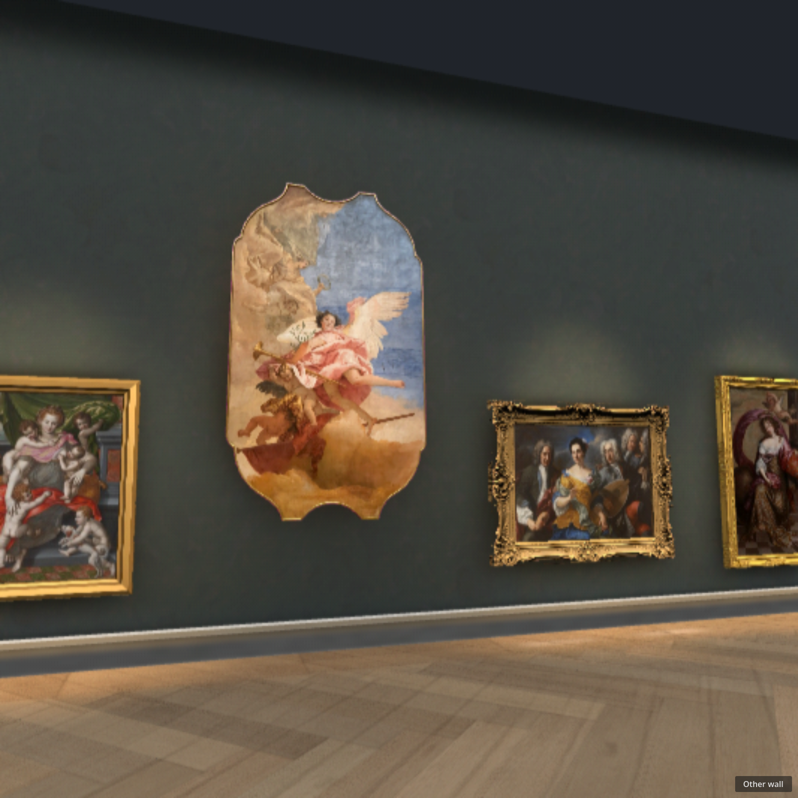
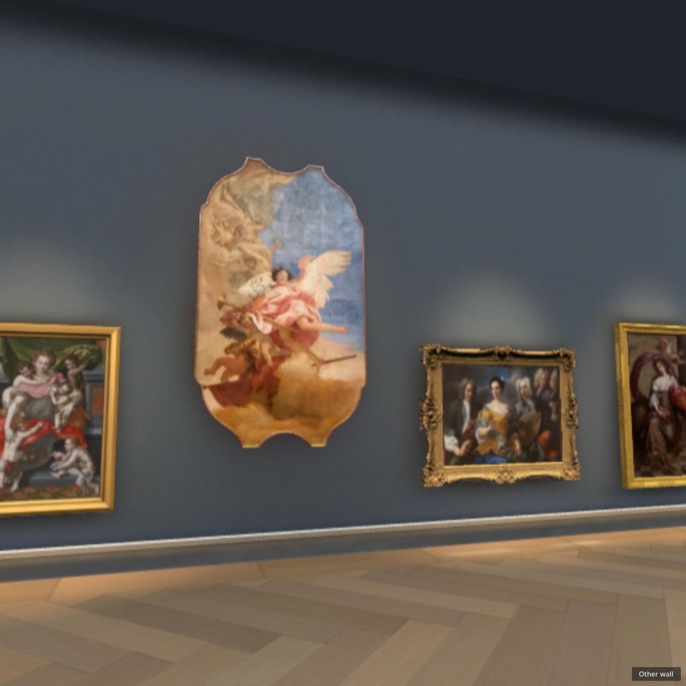
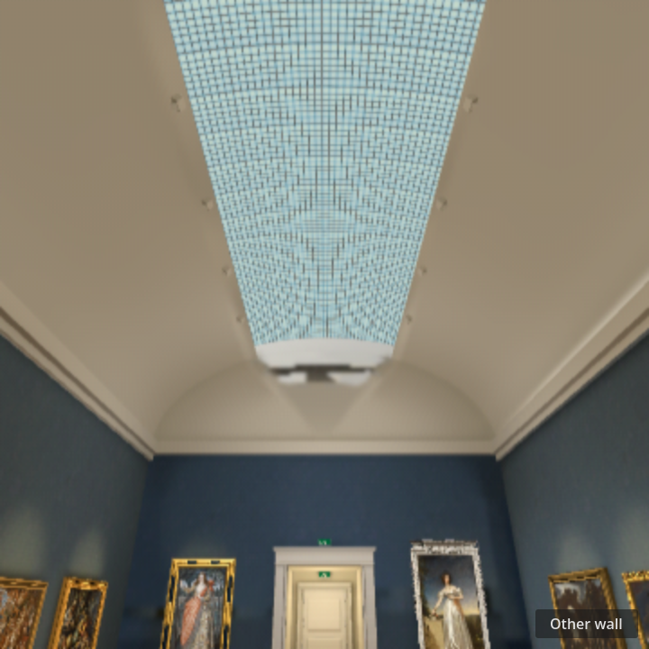
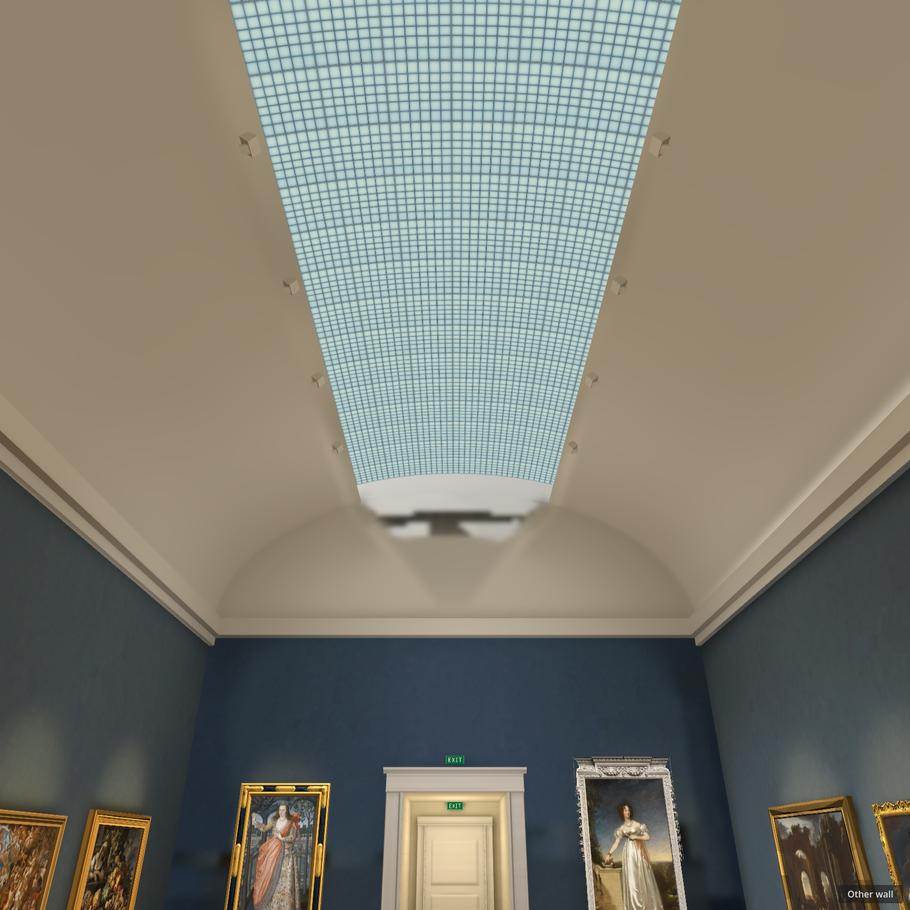

Gallery wall and skylight, #168
Reference and matched square captures. The wall is a visual prototype; the skylight remains open.
References
 Gallery source view
Gallery source view West wall source frames
West wall source framesWall before → final
Before, exported Web, 720 Final wall trial, exported Web, 720
Final wall trial, exported Web, 720
Before, native, 1600
Final wall trial, native, 1600Skylight still failing

Native, 720
Exported Web, 1600